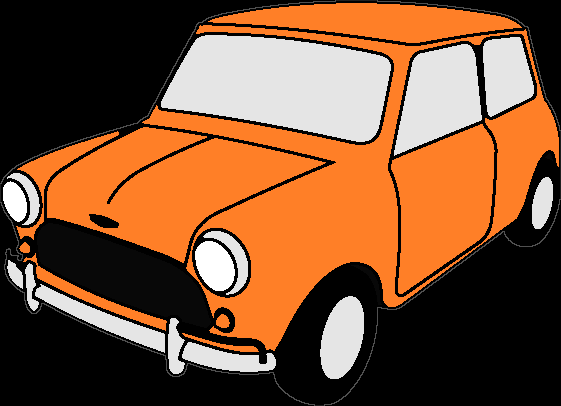
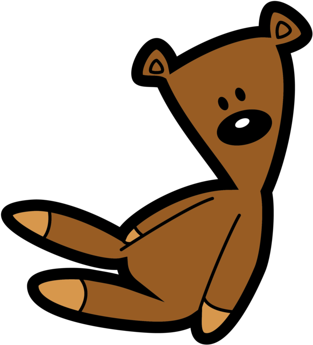
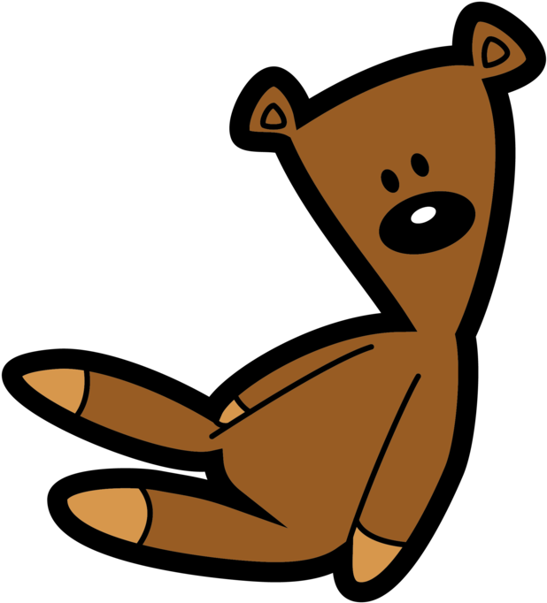

About me
Mr. Bean's Mini
First Mini
My first Mini was an orange 1969 BMC Mini MK II (registration RNT 996H), only seen in the live-action episode Mr. Bean. It was crashed at the end of the same episode.
Second Mini
My second mini is green, a 1977 British Leyland Mini 1000 was Austin Citron Green in colour with a matte black bonnet and has the registration number SLW 287R. This Mini was used from "The Curse of Mr. Bean" until "Back to School, Mr. Bean".
My Best Friend
Teddy
Teddy is my best friend.The bear is a dark brown, knitted oddity with button eyes and sausage-shaped limbs, invariably ending up broken in half or in various other states of destruction and disfiguration.



